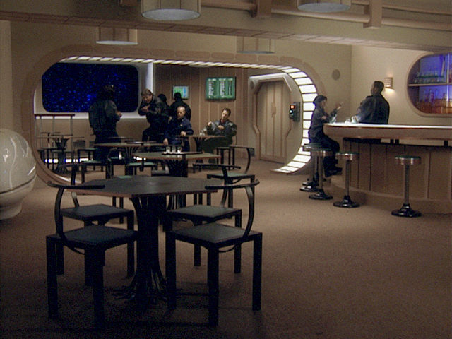
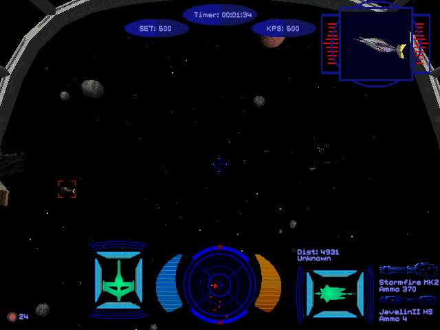

名稱：銀河飛將5：神諭／世紀的預言 (Wing Commander: Prophecy，簡中／英文版) 簡介：Origin 1997年出品的太空飛行戰鬥模擬遊戲，為銀河飛將最後一部作品，也稱為後傳。 1998年推出「秘密行動（Secret Ops）」獨立資料片 [待補]。   備註：本版缺繁中光碟 保護：光碟 備註：XP以上系統執行「秘密行動」獨立資料片時，需將SecretOps.exe設成Win9x相容。

